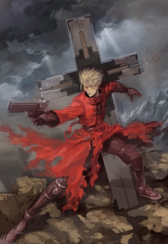

Год выхода: 1998
Жанр: приключения, комедия, драма, фантастика
Тип: ТВ
Количество серий: 26 (25 мин.)
Режиссёр: Нисимура Сатоси
Описание: Когда работницам страхового агентства, Милли Томпсон и Милли Страйф, поручили отправиться в город Макка, чтобы утвердить договор и оценить стоимость статуи Кеплера, местного благодетеля, девушки наивно полагали, что это будет легкое задание. Увы, сразу же по прибытии они поняли, что желание Кеплера застраховать свою статую никак не связано с утверждением договора. Оказывается, ходят слухи, что на Макку нацелился известный бандит Гасбак, и теперь город, ждущий его появления, полон охотников за головами. И это еще не самое страшное! Мерил и Милли ждет еще один сюрприз: в набитой головорезами забегаловке они встречают никого иного, как Ваша Паникера – «человека-тайфуна», который, если верить слухам, когда-то разрушил целый город.